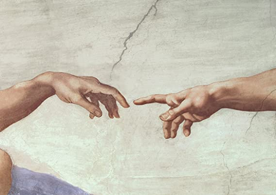

A Handmade Web
"The booming size of today's mainstream social networks and the constant level of noise we have to deal with has inspired a sudden return to a time when the internet was quieter, safer, and more intimate… We're nostalgic for the close-knit, DIY nature of the early web, where everything was smaller..."
handbook
